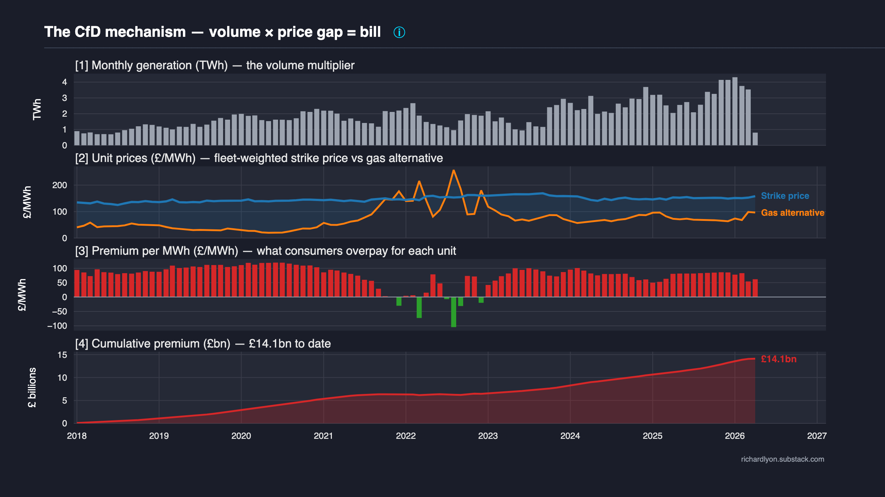
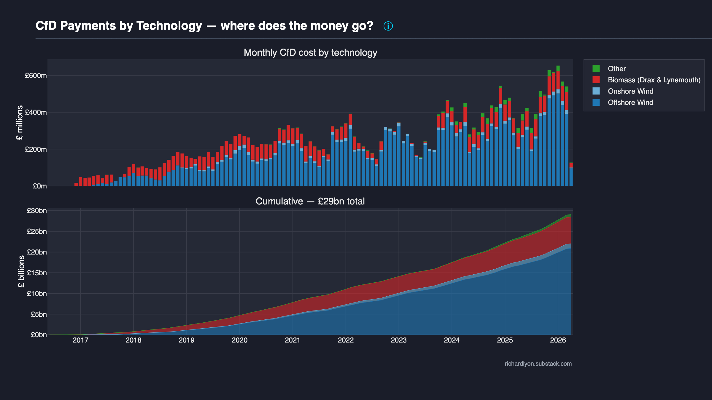
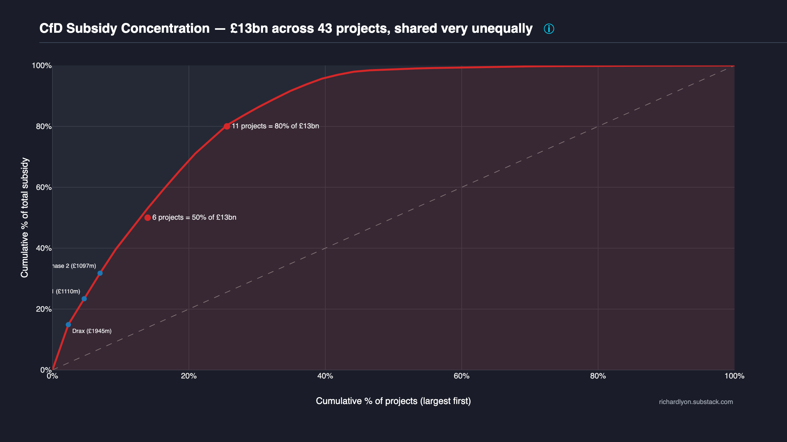
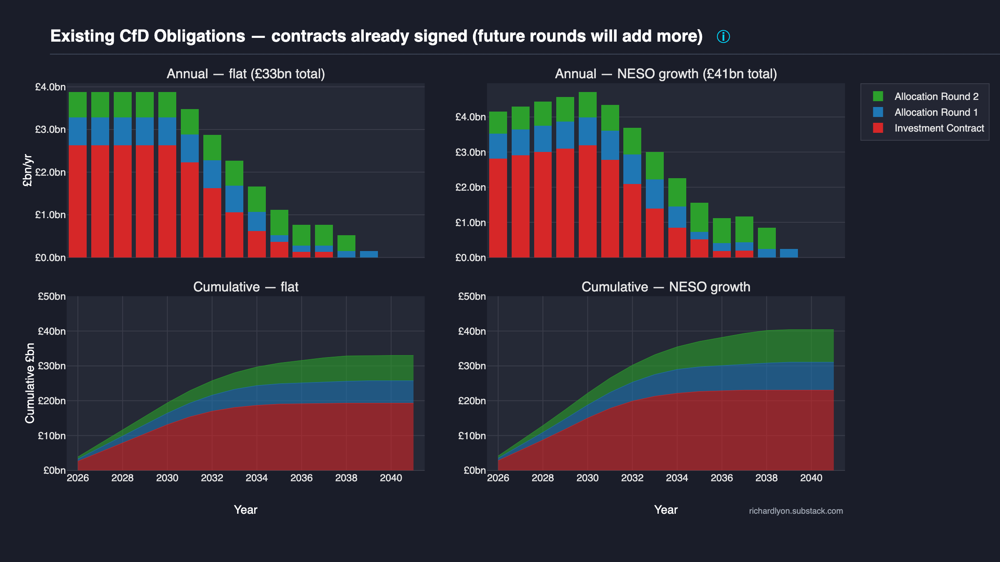

UK Contracts for Difference (CfD)¶
The price floor sold as a shield — ten years in, UK consumers have paid £29 billion for CfD electricity and £14 billion more than the existing gas fleet would have cost for the same MWh.
The premium is paid every month. In only one year — 2022, the worst gas crisis in living memory — did CfD electricity come close to matching the gas alternative, and even then it still cost 7% more. In normal years the CfD price is roughly twice the gas alternative; in 2020, when gas was cheap, it was five times more expensive.
Every component is visible and auditable. Primary source is the LCCC data portal (daily CfD settlements, generation, and portfolio). The gas counterfactual is shared with RO (see methodology/gas-counterfactual.md). Days before January 2018 have no gas counterfactual (ONS/UK ETS coverage starts then), so approximately 5.6 TWh of early 2016–17 generation is excluded; including it would add at most ~£0.4bn to the cumulative £14bn figure. Structural concentration is visible in the data: 6 projects receive 50% of the £29bn paid to date — see §5 (Concentration, Chart S4) for the project-level breakdown.
What is the CfD?¶
A Contract for Difference guarantees a fixed price per MWh — the strike price — to a renewable generator for fifteen years. The electricity still sells into the wholesale market at a variable reference price. When reference falls below strike, consumers top up the difference through a levy. When reference rises above strike, the generator pays the difference back. Total cost to the consumer: the strike price. Always. Regardless of what gas is doing.
The generator is insulated from market risk. The consumer pays the strike price — no more, no less. The consumer was never promised anything about the level of that stable price.
The mechanism in brief:
- Strike price — the contractually fixed price per MWh the generator receives over the term.
- Reference price — the market wholesale price (typically the Elexon N2EX day-ahead index).
- Levy direction — when reference < strike, consumers pay up; when reference > strike, the generator pays back.
- Contract term — 15 years for most CfD rounds; 20 years from AR7 onwards; 35 years for Hinkley Point C (nuclear, individually negotiated).
Why the CfD dominates the renewables-subsidy conversation¶
CfD has a public profile that the Renewables Obligation does not. It is named in DESNZ press releases, debated in select committees, and reported on after every Allocation Round. The result is that the CfD is the scheme most readers already know — and yet its headline consumer cost (£29bn) is materially smaller than the RO's (£67bn). This page documents what the CfD costs and who receives it, with the same methodology and the same adversarial scrutiny the RO scheme page applies to its numbers.
Why a 15-year strike-price lock matters¶
The strike price is contractually fixed for 15 years. Generators accepted market risk at auction (competitive bidding in Allocation Rounds drove strike prices down significantly between AR1 in 2014 and AR6 in 2023). Consumers accepted price-certainty in return. The lock matters because it means CfD costs are not sensitive to future gas prices — they are fully determined by the strike price and the generation volume. This is the "shield" the scheme was sold as. Whether the shield protects consumers or insulates generators depends entirely on whether the fixed price lands above or below what gas would have cost — and the data on this page answer that question.
Cost dynamics (Chart S2)¶

Four panels, each a direct consequence of the one above:
-
Panel [1] — Monthly generation (TWh). The volume multiplier. Fleet growth is visible as rising bar heights, with a clear seasonal wind signal (winter peaks, summer troughs).
-
Panel [2] — Unit prices (£/MWh). The mechanism itself. Blue is the fleet-weighted strike price consumers pay for every CfD MWh. Orange is the generation-weighted gas counterfactual — what the same MWh would have cost from the existing UK CCGT fleet. The shaded blue gap between them is the per-MWh cost of the policy.
-
Panel [3] — Premium per MWh (£/MWh). Strike minus counterfactual. Red when consumers overpay relative to gas; green when the scheme is genuinely cheaper. Watch 2022 dip toward zero — but never below it.
-
Panel [4] — Cumulative premium (£bn). Running total of
premium_per_mwh × generationsince the scheme began. This is the bill consumers paid over and above what the existing gas fleet would have cost for the same electricity. Endpoint currently £14.0bn (panel [4] aggregates to daily fleet-weighted strike prices; the row-level decomposition on cfd-vs-gas-cost gives £14.1bn — the two figures are the same quantity to rounding at the 0.1bn level).
The CfD shield does not work. In every year of the scheme's operation the blue line has sat above the orange line — including 2022, the worst gas crisis in living memory. The one year the two nearly converged, CfD electricity still cost consumers 7% more than gas would have.
In normal years — 2018, 2019, 2020, 2023, 2024, 2025 — CfD electricity has cost roughly 2× the gas alternative. In 2020, when gas was cheap, it cost 5×. The scheme was sold as protection from crisis prices. What it actually did was take the ceiling of volatility and turn it into the floor of consumer bills.
Panel [4]'s red cumulative curve tells the cost of that policy choice: ~£14bn more than consumers would have paid for the same electricity from the gas fleet Britain already owned.
How the numbers stack — for each day:
strike_price = fleet-weighted strike across generating CfD units
counterfactual = fuel (gas_p/kWh × 10 / 0.55)
+ carbon (UK_ETS × 0.184 / 0.55)
+ £5/MWh O&M (existing CCGT fleet)
premium_per_mwh = strike - counterfactual
premium_gbp = premium_per_mwh × CFD_Generation_MWh
Monthly aggregation weights by generation. The cumulative in panel [4] is the running sum of daily premium_gbp.
By technology (Chart S3)¶

A two-panel diagnostic with shared x-axis (calendar month, scheme start to latest LCCC settlement). The top panel is a stacked bar: monthly CfD electricity cost decomposed by technology category — Offshore Wind (deep blue), Onshore Wind (light blue), Biomass Drax & Lynemouth (red), and a residual "Other" bucket (green) covering solar PV, ACT, energy-from-waste, and small-scale biomass. The bottom panel is a stacked area of the same data on a cumulative basis — the endpoint of each colour band reads directly as that technology's lifetime CfD spend in £bn.
Colours follow the TECHNOLOGY_COLORS convention used across the site (Offshore #1f77b4, Onshore #6baed6, Biomass #d62728, Other #2ca02c), so the same colour in the Cost theme charts refers to the same technology.
Offshore wind and Drax biomass dominate. Almost every pound of CfD subsidy flows to one of two categories.
The per-project Lorenz chart (§5) makes the point at the unit level: 6 projects capture half the £29bn. This chart makes the same point along a different axis: when you collapse those individual contracts into technology categories, the cumulative stacked area in the bottom panel shows the vast majority of lifetime CfD spend falls inside two bands — Offshore Wind (largest single band) and Biomass (entirely Drax + a small Lynemouth contribution). Onshore wind is a thin band despite its large installed-capacity share of the wider UK renewables fleet, because most onshore wind in Great Britain predates the CfD scheme and was built under the Renewables Obligation regime.
This is not a criticism of offshore wind or Drax individually. It is a statement about what the CfD mechanism is actually doing with the consumer levy pound. A reader evaluating "does the UK need CfDs?" should evaluate the offshore wind contracts and the Drax biomass contract on their specific merits — strike price, carbon intensity, supply-chain economics — rather than on a diffuse "supports renewables in general" argument. The chart forces the concentration into the foreground.
The monthly top panel shows a second structural feature: 2022 appears as negative slivers for most technologies. During the gas crisis wholesale prices exceeded most CfD strike prices, triggering the clawback mechanism: generators paid consumers back, so CFD_Payments_GBP went negative for that window. This is the CfD mechanism working as designed — it fixes the price in both directions.
Technology mapping collapses the LCCC Technology field into four display categories:
LCCC Technology |
Display category |
|---|---|
Offshore Wind |
Offshore Wind |
Onshore Wind |
Onshore Wind |
Biomass Conversion |
Biomass (Drax & Lynemouth) |
| (anything else) | Other |
Per-row cost formula: cfd_cost = Market_Reference_Price_GBP_Per_MWh × CFD_Generation_MWh + CFD_Payments_GBP. This is mathematically equivalent to Strike_Price × CFD_Generation_MWh by construction, but using reference_price × gen + CFD_Payments_GBP directly picks up any LCCC settlement adjustments — negative-pricing suspensions, cap/floor rules, settlement re-runs — so the totals here match cash actually transferred rather than a theoretical strike-price reconstruction.
Technology-specific caveats:
- Technology classification follows the LCCC portfolio snapshot. A unit's
Technologyfield is fixed per-row as reported by LCCC; reclassifications mid-contract are rare but not tracked. - "Other" aggregates several small categories. Solar PV, Advanced Conversion Technology, Energy-from-Waste, and any small-scale biomass are pooled into the Other bucket. Individually they are too small to plot as distinct bands; collectively they represent a few percent of lifetime cost.
- 2022 negative-payment months are visible as inverted slivers. For most generators
CFD_Payments_GBPwent negative during the gas crisis when wholesale exceeded strike. The stacked-bar rendering shows this as a small below-zero segment for the affected categories; it is not a charting glitch. - Biomass category is almost entirely Drax. Lynemouth converted smaller tonnages and its CfD lifetime payments are dwarfed by Drax's Investment Contract. "Biomass" in this chart is effectively a single-recipient story.
Concentration (Chart S4)¶

A standard Lorenz curve built over CfD projects instead of households. The x-axis is the cumulative share of projects (sorted from largest recipient downwards); the y-axis is the cumulative share of total CfD levy payments. A grey dashed diagonal marks the "equal distribution" reference where every project would receive the same pound amount. The red filled curve is the actual distribution — the further it bows below the diagonal, the more concentrated the spending.
Two threshold annotations sit on the red curve: one marking the smallest number of projects whose cumulative share of £ crosses 50% (6 projects); the other at 80% (11 projects). The top three recipients by cumulative payment are labelled by name — typically Drax (biomass Investment Contract), followed by two offshore wind stations (Hornsea and Beatrice or Walney depending on the vintage window). Exact £m figures are attached to each marker.
Six projects receive 50% of all CfD subsidy. Eleven receive 80%. The "renewables revolution" is a concentrated industrial-scale transfer to a handful of offshore wind farms and one converted coal station.
The headline framing of the CfD scheme — "supporting Britain's renewable industry" — implies breadth. The arithmetic implies the opposite. Of roughly ~80 projects with positive net CfD payments to date, the top 6 alone capture half the £29bn. One of those six is Drax, which is a biomass unit, not wind or solar. Strip Drax out and the remainder is dominated by Investment-Contract-era offshore wind built 2014–2019: Hornsea, Beatrice, Walney, East Anglia ONE, Burbo Bank Extension. These are all very large single-owner sites operated by three or four multinational developers (Ørsted, SSE, Iberdrola, Equinor).
This concentration is a feature of the subsidy design, not an accident of the current fleet. Strike prices were set via competitive auction per project, and the economics of offshore wind favour very large single sites for capex efficiency. The result is that the CfD mechanism's total spend is structurally dominated by a small number of very large contracts — and adversarial readers should evaluate the scheme's merits on those contracts specifically, not on the distributed "many small projects" framing the policy is usually defended with.
Lorenz methodology:
by_unit = group(Name_of_CfD_Unit, Allocation_round)
→ sum(CFD_Payments_GBP)
by_unit = by_unit[payments > 0] # filter positive-payment units
by_unit = sort_descending(payments)
cum_pct_payments = cumulative_sum(payments) / total(payments) × 100
cum_pct_projects = rank(unit) / n_units × 100
The two threshold annotations (50% and 80%) are computed as the smallest rank whose cum_pct_payments first crosses the threshold — (cum_pct_payments >= threshold).argmax() in numpy terms. Top-three labels attach the raw £m figure to each of the first three ranked units.
No gas counterfactual is used. Lorenz is pure attribution of money already spent: where did the £29bn go?
Concentration caveats:
- Positive-payment filter is load-bearing. Units with net-negative payments over the window (i.e. net clawback back to consumers during the 2022 gas crisis for a small handful of high-strike contracts) are excluded — they received no net subsidy. Including them would break the monotonic sort Lorenz requires and distort the percentage baseline.
- Multi-phase offshore wind farms are treated as separate recipients. Hornsea Phase 1, Phase 2A, and Phase 2B each appear as their own
Name_of_CfD_Unitbecause each is a separate contract with its own strike price and start date. A "single developer" view would collapse these, but the scheme's commercial mechanism is per-contract — the chart follows the mechanism. - 2022 gas-crisis distortion. During the 2022 price spike, many CfD contracts paid back to consumers for individual months (
CFD_Payments_GBP< 0). Cumulative lifetime totals per unit remain positive for every unit shown; the negative monthly flows are folded into each unit's lifetime sum before the filter. - No Gini coefficient plotted. The chart prioritises the "6 projects = 50%" threshold numbers as the adversarial payload; Gini is a derived single-number summary and can be re-computed from the same data on demand.
The RO scheme's equivalent concentration view is at RO Concentration; the curvature differs (RO steeper because Drax + Lynemouth + top offshore farms dominate over 20 years; CfD shallower because the fleet is more uniformly-large offshore wind).
Forward commitment (Chart S5)¶

CfD contracts lock in a strike price for fifteen years (twenty from AR7 onwards). The oldest contracts run until the late 2030s. Nuclear (Hinkley) runs 35 years. This chart shows the forward commitment from contracts already in the ground.
Two scenarios × two time views:
- Columns — flat (left) assumes current generation levels persist; NESO growth (right) scales generation with projected UK electricity demand growth (~30% by 2035, doubling by 2050).
- Rows — annual £bn/yr (top); cumulative £bn (bottom).
Each bar and area is decomposed by allocation round — Investment Contracts (red), AR1 (blue), AR2 (green). Later rounds (AR4–AR6) have too little generation history to project meaningfully and are omitted; this understates the true forward cost.
Headline figures¶
Total forward cost from 2026 onwards, under the flat scenario:
| Round | Units | Annual cost | Runs to |
|---|---|---|---|
| Investment Contracts | 14 | £2.6bn/yr | 2038 |
| Allocation Round 1 | 22 | £0.7bn/yr | 2040 |
| Allocation Round 2 | 9 | £0.6bn/yr | 2039 |
| Total (these rounds only) | 45 | £3.9bn/yr | 2041 |
Cumulative forward bill: ~£33 billion in the flat scenario. The NESO growth scenario pushes this higher as demand scaling lifts generation volumes. Realistic forward commitment, including everything signed and pending, is comfortably north of £50bn.
What's not in this chart¶
This is only a floor. The £33bn excludes:
- AR3 onwards (~300 projects) — not enough generation history to project reliably. Most are offshore wind at £39–120/MWh strike prices (2012 money, CPI-indexed).
- AR7 auction (~200 projects) — being auctioned in 2026. First-ever 20-year contracts.
- Hinkley Point C — £92.50/MWh (2012 money) for 35 years from commissioning. Not yet generating, so omitted from the chart. Sizewell C will add another large nuclear contract.
- Drax 4-year biomass CfD (2027–2031) — a separate new contract not included; only Drax's original Investment Contract is shown.
Forward-projection methodology:
avg_strike = generation-weighted average strike price (historical)
avg_annual_gen = total generation / number of years of operation
annual_cost = avg_strike × avg_annual_gen
remaining_years = contract_end_year - current_year
unit_forward_cost = annual_cost × remaining_years
Contract end year uses Expected_Start_Date from the LCCC portfolio dataset where available, falling back to first observed generation date. Contract length is 15 years for renewables, 35 for nuclear — the standard terms.
Growth scenario applies a linear interpolation of NESO's Future Energy Scenarios demand projections (280 TWh in 2024, 390 TWh in 2035, 692 TWh in 2050) as a multiplier on generation volumes.
Forward-commitment caveats:
- Estimates, not forecasts. Actual generation varies with weather. Strike prices are contractually fixed; volumes are not.
- Growth scenario assumes CfD generation scales with total UK demand. This is the government's stated plan but is not contractually guaranteed.
- Contract length for Investment Contracts is assumed at 15 years. These were individually negotiated and their exact terms are not publicly confirmed.
- AR7's 20-year terms are not reflected — these are existing contracts only. Every new AR7 contract will make future lock-in longer.
Methodology¶
- Primary cost:
cfd_cost = reference_price × generation + CFD_Payments_GBP— mathematically equivalent tostrike × generationby construction, but using the reference-price formulation picks up LCCC settlement adjustments (negative-pricing suspensions, cap/floor rules, settlement re-runs). Seecounterfactual.pyfor the premium calculation. - Gas counterfactual: shared with RO. See
methodology/gas-counterfactual.mdfor the single source of truth on the displaced-gas assumption (CCGT efficiency 0.55, ONS gas wholesale, UK ETS carbon overlay, £5/MWh fixed O&M existing-fleet). - Calendar year axis: all charts use calendar year. Scheme-year (Apr-Mar) is preserved in raw LCCC settlements but derived grains aggregate to CY.
- Scope: GB-only; CfD is a GB-scheme (no NIRO equivalent). LCCC settlements cover GB generation only.
- Wholesale+levy decomposition: For the breakdown of the £14bn premium into wholesale-price + consumer-levy cash flows, see what consumers paid vs what gas would have cost — the chart stays on its own theme page; the scheme page cross-links to it rather than duplicating.
- Methodology version:
counterfactual.METHODOLOGY_VERSION = "0.1.0"(seeCHANGES.md ## Methodology versions); bump to 1.0.0 reserved for Phase 6 portal launch. - Benchmark: reconciled against LCCC self-reconciliation floor per
tests/test_benchmarks.py; external cross-check candidates include published CfD settlement totals.
Methodology caveats — what this page does not adjust for¶
- Early period excluded. Days before Jan 2018 have no gas counterfactual (ONS/UK ETS coverage starts then), so ~5.6 TWh of early 2016–17 generation is excluded. Including it would add at most ~£0.4bn to the cumulative figure.
- Gas counterfactual assumes existing-fleet economics. Capex sunk, £5/MWh O&M. Using new-build gas (~£20/MWh all-in) would reduce the premium by ~£2bn over the same window. The direction of the result is robust to this choice; the magnitude is not.
- Assumes gas supply at observed wholesale prices. In reality, displacing CfDs with ~150 TWh of additional gas demand would likely push gas prices up. This biases the counterfactual cheaper than the real displacement case would be.
Data & code (GOV-01 four-way coverage)¶
-
Primary source — LCCC Actual CfD Generation and avoided GHG emissions (daily settlements; primary source for S2, S3, S4), LCCC CfD Contract Portfolio Status (for S5 forward projection), ONS System Average Price of gas (gas counterfactual fuel cost), UK ETS auction results (GOV.UK) (carbon-price overlay), NESO Future Energy Scenarios (S5 NESO-growth scenario demand projections).
-
Chart source code —
plotting/subsidy/cfd_dynamics.py,cfd_payments_by_category.py,lorenz.py,remaining_obligations.py. -
Pipeline source code —
schemes/cfd/(CfD scheme module: refresh, cost model, aggregation, forward projection),counterfactual.py(gas counterfactual formula shared with RO),data/lccc.py(LCCC raw downloader),data/ons_gas.py,data/elexon.py. -
Test —
tests/test_counterfactual.py— pins the gas counterfactual formula (fuel + carbon + O&M) per Phase 2 TEST-01,tests/test_benchmarks.py— LCCC self-reconciliation floor + external anchors (Phase 2 TEST-04). -
Reproduce:
git clone https://github.com/richardjlyon/uk-subsidy-tracker
cd uk-subsidy-tracker
uv sync
uv run python -c "from uk_subsidy_tracker.schemes import cfd; cfd.refresh(); cfd.rebuild_derived()"
uv run python -m uk_subsidy_tracker.plotting
Per-grain derived-data shape¶
| Grain | Rows (typical) | Key columns | Used by chart |
|---|---|---|---|
station_month.parquet |
~150k | unit_name, allocation_round, technology, strike_gbp_per_mwh, generation_mwh, cfd_cost_gbp, gas_counterfactual_gbp, premium_gbp |
(foundation for all) |
annual_summary.parquet |
~10 | year, cfd_cost_gbp, gas_counterfactual_gbp, premium_gbp, generation_mwh |
S2 dynamics |
by_technology.parquet |
~40 | year, technology, cfd_cost_gbp, generation_mwh |
S3 by-technology |
by_allocation_round.parquet |
~40 | year, allocation_round, cfd_cost_gbp, generation_mwh |
(cross-scheme analogue) |
forward_projection.parquet |
~200 | year, unit_name, allocation_round, cfd_cost_gbp (projected) |
S5 forward |
Headline FAQ¶
Q: Is £29bn / £14bn the only figure that matters?
No. The £29bn is the cumulative consumer payment for CfD electricity since scheme start; the £14bn is the premium over the gas counterfactual for the same period. Three other numbers carry comparable weight: the annual current-year CfD levy (~£3–5bn/yr depending on wholesale prices), the forward-committed total (visible on chart S5; currently ~£33bn floor, >£50bn including AR3+), and the per-MWh premium (chart S2 panel 3). Neither headline number alone tells the forward-commitment story, which is chart S5's load-bearing contribution.
Q: Why compare to gas rather than to renewables-without-subsidy?
The gas counterfactual asks "what would the same MWh have cost from the existing CCGT fleet?" — this is the marginal-displacement question. The UK has a large fleet of gas plant that would have generated those MWh absent CfDs. Comparing to renewables-without-subsidy would require modelling a counterfactual generation mix that does not exist. The full methodology and sensitivity analysis live at methodology/gas-counterfactual.md; alternative framings (£/tCO₂ avoided, new-build gas comparison) are documented on other site themes.
Q: What about 2022? Didn't the scheme work that year?
CfD still cost 7% more than gas even at the 2022 crisis peak — see chart S2 panel 3. The premium-per-MWh inverted briefly for the highest-strike contracts (those units' CFD_Payments_GBP went negative, meaning generators paid consumers back), but the cumulative bill in panel 4 kept climbing throughout. The "shield" framing rests on 2022 as evidence; the chart shows 2022 was the hardest possible test and the scheme still failed it at the fleet-weighted average level.
Q: How is £29bn different from LCCC's published CfD figures?
LCCC publishes CFD_Payments_GBP directly — the net levy cash flow between the Low Carbon Contracts Company and generators. This site derives consumer cost as reference_price × generation + CFD_Payments_GBP, which is mathematically strike × generation and represents the total consumer payment including both the wholesale-market component and the levy top-up. The two figures converge to the same £/MWh when reference prices are low but diverge when wholesale exceeds strike (2022: LCCC published negative levy payments; this site's consumer-cost figure smoothed upward because the wholesale component kept rising). See LCCC Actual CfD Generation data portal for the raw figures.
See also¶
- Cost theme — cross-scheme subsidy cost comparisons.
- Recipients theme — who receives the subsidies.
- Gas counterfactual — the displaced-gas methodology shared with RO.
- Citation — how to cite this dataset.
- Corrections — reporting errors in any CfD chart, number, or methodology claim on this page.
- Schemes overview — landing page for all per-scheme detail pages; links to Renewables Obligation (RO) as the sister scheme page.
This page is part of the Schemes section. It is the first scheme detail page chronologically — CfD is the prototype scheme this site was built around — and it mirrors the RO scheme page structure verbatim. The template here — eight sections, GOV-01 four-way coverage at page bottom, Headline FAQ — is the pattern for the remaining scheme detail pages (FiT in Phase 7, constraints / capacity market / balancing / grid / SEG in Phases 8-12).
Last refreshed: see manifest.json generated_at field; daily 06:00 UTC cron.